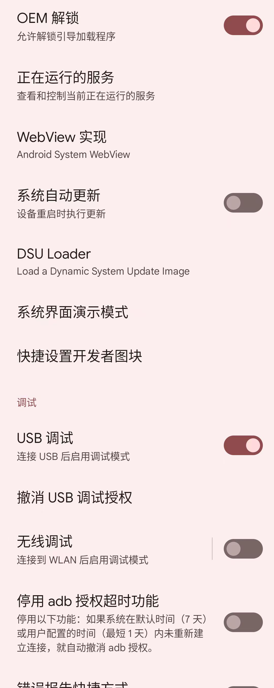

解锁Bootloader
先确保
- 系统
设置->开发者选项->设置->已开启：OEM解锁- 
再去解锁Bootloader：
adb reboot bootloader
此时安卓手机会进入Fastboot模式，其中能看到Device-State: locked：

表示Bootloader未解锁
再去：
fastboot devices
确保能看到，处于的安卓手机设备：
比如：
➜ MagiskCoreAndApp fastboot devices
9C181A8D3C3F3B fastboot
- 如果想要查看详情，可以加参数
-l➜ MagiskCoreAndApp fastboot devices -l 9C181A8D3C3F3B fastboot usb:1048576X
再去用：
fastboot flashing unlock
手机会进入Bootloader解锁页面：

按音量键加减，切换到：
Unlock the bootloader
再按电源键表示确认
会去重启安卓手机Pixel5，重启后再次进入了Fastboot Mode
会看到Device-State: unlocked

表示：Bootloader已解锁
然后：
fastboot reboot
会重启安卓手机
注：重启后
- 此时就相当于一个新的手机
- 就像之前重刷了官网的Android13的ROM一样
- -> 需要一步步初始化设置，直到进入系统桌面
- 另外最好重新去：
开启USB调试- 供后续开发调试用
- 就像之前重刷了官网的Android13的ROM一样
系统->设置->开发者选项->设置OEM解锁：已经变成灰色了=不可勾选- -> 表示
已解锁Bootloader了，无法再次点击开启
- 对于已解锁Bootloader的安卓手机（此处的Pixel5），后续每次重启时，都会有相关的提示
The bootloader is unlocked ...